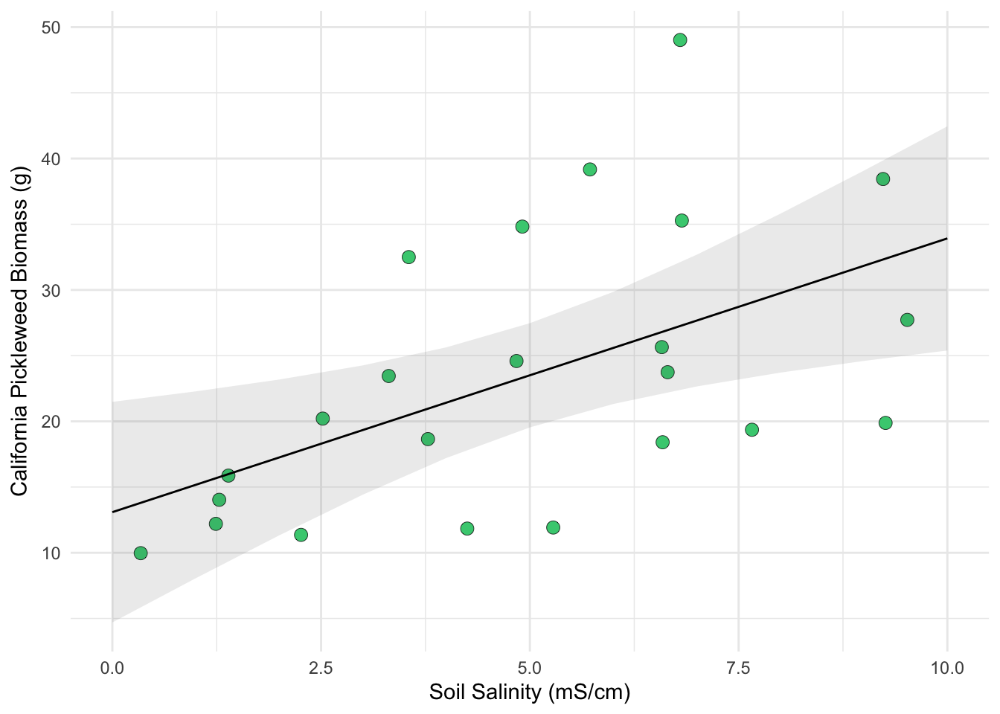

library(tidyverse) # general use
library(janitor) # cleaning data frames
library(here) # file/folder organization
library(readxl) # reading .xlsx files
library(ggeffects) # generating model predictions
library(gtsummary) # generating summary tables for models
library(ggplot2) # making ggplots
library(viridisLite)
library(flextable)
# read in data as object "pickleweed"
pickleweed <- read.csv(here("data", "salinity-pickleweed.csv"))
# read in personal data as object
my_data <- read_xlsx(here("data", "ENVS193_personal_data.xlsx"))ENVS-193DS_homework-03
Part 1. Set up tasks
Part 2. Problems
Problem 1. Slough soil salinity
a. An appropriate test
The two appropriate tests are Pearson’s correlation coefficient (r) and Spearman’s rank correlation coefficient (ρ), which both quantify the strength and direction of the relationship between two continuous variables: salinity (e.g., soil or water salinity concentration) and California pickleweed biomass (e.g., grams of dry mass). Pearson’s r tests for a linear relationship and assumes approximately normally distributed, continuous variables with independent observations, whereas Spearman’s ρ is a non-parametric, rank-based test that assesses a monotonic relationship without requiring normality.
b. Create a visualization
pickleweed_clean <- pickleweed |>
clean_names() |>
select(salinity_m_s_cm, pickleweed) |>
rename(salinity = salinity_m_s_cm,
biomass = pickleweed)ggplot(data = pickleweed_clean,
aes(x = salinity,
y = biomass)) +
geom_point(size = 3,
color = "seagreen3",
alpha = 21) +
labs(x = "Soil Salinity (mS/cm)",
y = "California Pickleweed Biomass (g)") +
theme_minimal()
c. Check your assumptions and run your test
1) Check assumptions:
pickleweed_lm <- lm(
biomass ~ salinity,
data = pickleweed_clean)par(mfrow = c(2, 2))
plot(pickleweed_lm) 
as_flextable(pickleweed_lm) Estimate | Standard Error | t value | Pr(>|t|) | ||
|---|---|---|---|---|---|
(Intercept) | 13.089 | 4.035 | 3.244 | 0.0039 | ** |
salinity | 2.083 | 0.719 | 2.898 | 0.0086 | ** |
Signif. codes: 0 <= '***' < 0.001 < '**' < 0.01 < '*' < 0.05 | |||||
Residual standard error: 9.144 on 21 degrees of freedom | |||||
Multiple R-squared: 0.2857, Adjusted R-squared: 0.2517 | |||||
F-statistic: 8.398 on 21 and 1 DF, p-value: 0.0086 | |||||
Table 1. Results of simple linear regression examining the relationship between soil salinity (mS/cm) and California pickleweed biomass (g).
pickleweed_preds <- ggpredict(
pickleweed_lm, # model object
terms = "salinity") # predictor (in quotation marks)
pickleweed_preds# Predicted values of biomass
salinity | Predicted | 95% CI
-----------------------------------
0 | 13.09 | 4.70, 21.48
1 | 15.17 | 8.06, 22.28
3 | 19.34 | 14.42, 24.26
4 | 21.42 | 17.21, 25.63
5 | 23.51 | 19.54, 27.47
6 | 25.59 | 21.32, 29.85
7 | 27.67 | 22.66, 32.69
10 | 33.92 | 25.39, 42.45ggplot(data = pickleweed_clean,
aes(x = salinity,
y = biomass)) +
geom_point(size = 3,
stroke = 0.2,
fill = "seagreen3",
shape = 21) +
geom_ribbon(data = pickleweed_preds,
aes(x = x,
y = predicted,
ymin = conf.low,
ymax = conf.high),
alpha = 0.1) +
geom_line(data = pickleweed_preds,
aes(x = x,
y = predicted)) +
labs(x = "Soil Salinity (mS/cm)",
y = expression("California Pickleweed Biomass (g)")) +
theme_minimal()
To determine whether Pearson’s correlation was appropriate for testing the relationship between soil salinity (mS/cm) and California pickleweed biomass (g), I checked the assumptions of linearity, normality of residuals, homoscedasticity, and influential outliers. I evaluated these using the scatterplot and linear model diagnostic plots, including the Residuals vs. Fitted plot for linearity and constant variance, the Normal Q–Q plot for normality, and the Residuals vs. Leverage plot with Cook’s distance for influential points. The diagnostics indicated a linear relationship, reasonably normal residuals, constant variance, and no influential outliers, so the assumptions for Pearson’s correlation were met.
2) Run test:
cor.test(pickleweed_clean$salinity, pickleweed_clean$biomass,
method = "pearson")
Pearson's product-moment correlation
data: pickleweed_clean$salinity and pickleweed_clean$biomass
t = 2.8979, df = 21, p-value = 0.008605
alternative hypothesis: true correlation is not equal to 0
95 percent confidence interval:
0.1568265 0.7757682
sample estimates:
cor
0.5344778 d. Results communication
To evaluate the strength of the relationship between California pickleweed biomass (g) and soil salinity (mS/cm), I used Pearson’s correlation, which is appropriate for testing the linear relationship between two continuous variables. We found a moderate positive relationship between soil salinity and pickleweed biomass (Pearson’s r = 0.53, t(21) = 2.90, p = 0.0086; R² = 0.29; Table 1), indicating that soil salinity significantly predicts biomass.
From our linear model coefficient estimates, we found that for each 1 mS/cm increase in soil salinity, pickleweed biomass increases by approximately 2.08 ± 0.72 g (Table 1). Biologically, this suggests that larger pickleweed individuals are more likely to occur in higher-salinity soils, while smaller individuals are more likely to be found in lower-salinity soils.
e. Test implications
You’re working on a team of people at this restoration site who are also concerned about pickleweed planting. In 2-3 sentences, write what you would communicate to them about the results of this test and what it means for pickleweed planting success at your site.
Be cognizant of your audience as you are writing: what would they need to know to take action?
The results of this test show that pickleweed grows best in areas with higher salinity, confirming that it is well adapted to salty marsh conditions. This means we should prioritize planting pickleweed in zones of our restoration site that regularly receive tidal input and maintain moderate to high salinity levels. Focusing efforts in these areas will likely improve survival and overall planting success.
f. Double check your own work.
cor.test(pickleweed_clean$salinity, pickleweed_clean$biomass,
method = "spearman")
Spearman's rank correlation rho
data: pickleweed_clean$salinity and pickleweed_clean$biomass
S = 824, p-value = 0.003426
alternative hypothesis: true rho is not equal to 0
sample estimates:
rho
0.5928854 Both tests would lead to the same decision about the null hypothesis because both show statistically significant associations between soil salinity and pickleweed biomass (Spearman: ρ = 0.593, p = 0.0034; Pearson: r = 0.67, p = 0.0046). While Spearman measures a monotonic relationship using ranked salinity and biomass values and Pearson measures a linear relationship using the raw continuous variables, both indicate a statistically significant, moderate positive relationship, meaning pickleweed biomass increases as soil salinity increases.
Problem 2. Personal
a & b. Updating your visualizations & Captions
my_data_clean <- na.omit(my_data) |> # remove all the NA's within personal data
clean_names() |> # clean the data names
rename(date = "date_yyyy_mm_dd", # renaming all the columns to be short and simple
dow = "day_of_week",
hw = "class_homework_time_hrs",
bible_study = "bible_study_completed_yes_no",
min = "minutes_of_bible_study_min",
location = "location_home_ucen_church_building_other" ,
time = "time_of_day",
with_someone = "with_someone_yes_no") |>
mutate(hw_mins = hw*60)ggplot(data = my_data_clean, # start with the my_data_clean data frame
aes(x = with_someone, # categorical predictor variable on the x-axis
y = min, # response variable on the y-axis
fill = with_someone)) + # coloring by production type
geom_boxplot(alpha = 0.6, # first layer should be a boxplot
width = 0.5,
outlier.shape = NA) +
geom_jitter(width = 0.2, # making the points jitter horizontally
height = 0,
alpha = 0.5,
size = 2,
color = "black") +
stat_summary(fun = mean,
geom = "point",
shape = 23,
size = 3,
fill = "white") +
scale_fill_manual(values = c("No" = "orangered3",
"Yes" = "limegreen")) +
scale_y_continuous(limits = c(0, NA),
expand = expansion(mult = c(0, .05))) +
labs(x = "With Someone (Yes/No)", # label x- and y- axes and add a title
y = "Bible Study Devotional (mins)",
title = "Bible Time When Studying Alone vs. With Others",
subtitle = "Most recent observation: 25 Feb 2026") +
theme_minimal(base_size = 12) + # change the theme
theme(legend.position = "none",
panel.grid.minor = element_blank(),
plot.title = element_text(face = "bold")) # remove the legend 
Figure 1. Bible Study Duration When Alone vs. With Someone Else. This figure shows a box-and-jitter plot of Bible study devotional time (minutes) grouped by whether the study was completed alone (No) or with someone else (Yes). Semi-transparent boxplots are filled in red (No) and green (Yes), with outliers removed from the boxplot layer. Individual daily observations are overlaid as black jittered points to display raw data distribution. White-filled diamond-shaped points represent the group means for each category.
ggplot(my_data_clean,
aes(x = hw_mins,
y = min,
shape = location,
fill = location)) +
geom_point(size = 4,
alpha = 0.9,
color = "black") +
scale_shape_manual(values = c(21, 22, 23, 24, 25)) +
scale_fill_viridis_d(option = "G") +
coord_cartesian(ylim = c(0, 130)) +
labs(
x = "Time spent doing Homework/Classes (mins)",
y = "Bible Study Devotional (mins)",
title = "Daily Homework Time vs. Bible Study",
subtitle = "Most recent observation: 25 Feb 2026") +
theme_light() +
theme(
legend.position = "right",
plot.title = element_text(face = "bold"))
Figure 2. Daily Homework Time vs. Bible Study Duration by Location. This figure presents a scatterplot of homework/class time (minutes) on the x-axis and Bible study devotional time (minutes) on the y-axis. Each observation is plotted as a large point with a black outline and filled using a discrete viridis color palette to represent study location. The different semi-transparent point shapes (circle, square, diamond, and triangle) further distinguish locations. The legend appears on the right to identify the color and shape corresponding to each location category.